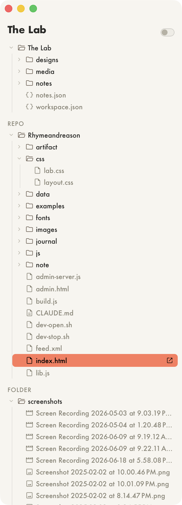

File Directory
V.0.2
A single column file browser that lists all my linked folders in a Project. Because a Project might often have a code repo and a folder of images or videos that aren't in the main Project folder. It lives in its own window so that I can make it extra tall. A super bright color highlight, toggle for font size, and single click to open.